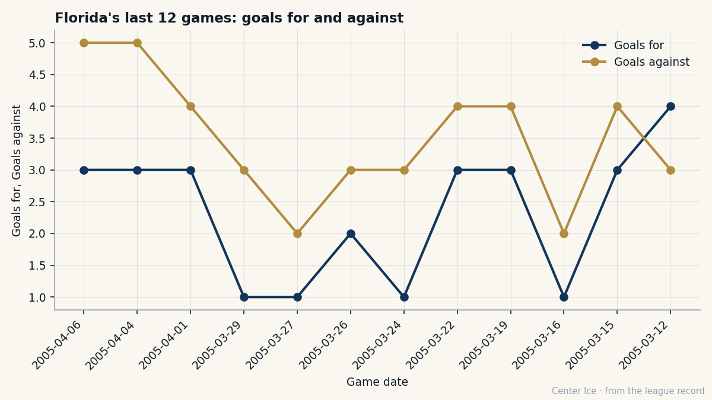

FLA
FLAWhat the Room Learned: Florida, $51.07M, and the 11 Losses at the End
The Panthers went from 99 points to 76 on the fifth-highest payroll in the league. Their GM said on The Tunnel that the roster lacked depth. The young guys he drafted say something more complicated.
 Carol BinghamFeatures writer · Rinkside
Carol BinghamFeatures writer · RinksideFlorida had 99 points last season. They had 76 this one. The 23-point drop took them from a playoff team that won one round to the 27th-ranked club in a 30-team league, and it happened on the fifth-highest payroll in the league: $51.07M.
The math on that payroll, divided by 76 points, is $0.67M per point. New Jersey pays $0.40M a point. Vancouver pays $0.36M. Florida pays more than 22 clubs and finished behind all of them.
Boris Van Ryswyk sat with The Tunnel's Marcus Bell on April 7, three days before the regular season ended, and told him what he thinks went wrong. "What's hurting us is a roster that doesn't have depth enough to survive twenty-some injuries across the league in any season," he said. "We've got young guys learning on the fly, we've got veterans trying to hold the line, and we don't have the development structure underneath that the clubs ahead of us have."
He is not wrong about the young guys. Florida has four players under 24 on this year's roster whose overall grades sit between 74 and 78. They are all learning. The question the season answered is what they learned.
The pieces on the ice
 Jay Bouwmeester82 is 21, 79 games played, 27 points on the blue line, 33.3 minutes a night. He carries the load of a number-one defender in his second full season. His grade is 78 and his potential sits at 95.
Jay Bouwmeester82 is 21, 79 games played, 27 points on the blue line, 33.3 minutes a night. He carries the load of a number-one defender in his second full season. His grade is 78 and his potential sits at 95.
 Vaclav Nedorost83 is 23, centering a line, 25 points in 69 games. The Bureau's Development Index has him at +6, up from a base of 75 to 78. He scored 10 points through 36 games at one point and then found 15 more over the next 33. A young center finding his feet, and a team that needed him to find them faster.
Vaclav Nedorost83 is 23, centering a line, 25 points in 69 games. The Bureau's Development Index has him at +6, up from a base of 75 to 78. He scored 10 points through 36 games at one point and then found 15 more over the next 33. A young center finding his feet, and a team that needed him to find them faster.
 Kristian Kudroc75 is 23, 70 games, 34 points as a defenseman who plays 24.7 minutes a night. His grade is 74. His potential is 89. He is the third young body carrying minutes that would belong to someone older and sturdier on a club with more depth.
Kristian Kudroc75 is 23, 70 games, 34 points as a defenseman who plays 24.7 minutes a night. His grade is 74. His potential is 89. He is the third young body carrying minutes that would belong to someone older and sturdier on a club with more depth.
 David Aebischer86 is the best value on the roster and perhaps the best value in the league right now. He is 27, he costs $0.50M, his grade is 86, and he played 33 games this season. His morale reads 80. He has one year left. Free agency closes in 98 days.
David Aebischer86 is the best value on the roster and perhaps the best value in the league right now. He is 27, he costs $0.50M, his grade is 86, and he played 33 games this season. His morale reads 80. He has one year left. Free agency closes in 98 days.

The line above is Florida's goals for and against over the last 12 games. The goals against sits above the goals for in 11 of those 12 nights. They lost 11 times. Six of those losses came in overtime or the shootout, which is another way of saying they were in the game and could not finish it.
The business side of a losing season
Florida made $13.64M in profit this year. The revenue figure is $72.88M. Attendance averaged 14,971 per game at $79 a ticket. Those are not the numbers of a club that is dying. They are the numbers of a club where the front office made money and the players could not close games.
Van Ryswyk put the comparison to Toronto directly. He told Bell that Toronto sells $94 tickets to 17,713 people. Florida sells $79 tickets to 14,971 people. "We're not in that league yet, the revenue," he said. And he is right that they are not. But they finished 57 points behind Toronto, not the difference between $79 and $94.
The salary distribution tells a story the payroll number hides. The Panthers carry players at every tier. Aebischer costs $0.50M. Andreas Lilja costs $0.50M. Three players cost $1.00M each. The top of the payroll is not absurd by this league's standards, but the middle is thin in the way Van Ryswyk described: men who are learning, not men who are carrying.
The stretch that defined the year
Florida won on March 12. They lost on March 15, March 16, March 19, March 22, March 24, March 26, March 27, March 29, April 1, April 4, and April 6. Eleven straight. The last three were regulation losses by two or more. Before that, the pattern was a one-goal or overtime loss, the kind that leaves a room asking what the difference was.
The goal differential for the whole season is minus-19. They scored 236 and allowed 255. That is not a disaster. A team that finishes 27th usually looks worse on both sides. Florida looked like a team that was close, and close is worse, because it means the pieces were there and the order was not.
What comes next
The draft is in 48 days. Florida picked first overall in 2001, and Bouwmeester was 2002's third pick. The development structure Van Ryswyk says they lack does not get built in one offseason, but the parts are identifiable: more 24-and-older players who own their lines, more defensemen who do not need 25 minutes a night from a 21-year-old, a goaltending situation where Aebischer either stays at $0.50M or leaves and the club starts over.